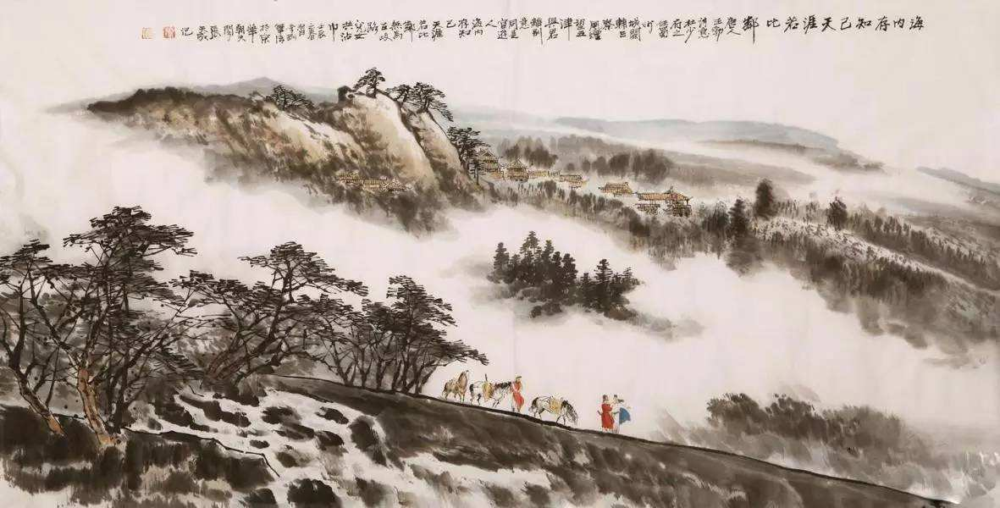

|
|  | 送杜少府之任蜀州 城阙辅三秦，风烟望五津。 与君离别意，同是宦游人。 海内存知己，天涯若比邻。 无为在歧路，儿女共沾巾。 |
词句注释 ⑴少府：官名。之：到、往。蜀州：今四川崇州。 ⑵城阙（què ）辅三秦：城阙，即城楼，指唐代京师长安城。辅，护卫。三秦，指长安城附近的关中之地，即今陕西省潼关以西一带。秦朝末年，项羽破秦，把关中分为三区，分别封给三个秦国的降将，所以称三秦。这句是倒装句，意思是京师长安三秦作保护。五津：指岷江的五个渡口白华津、万里津、江首津、涉头津、江南津。这里泛指蜀川。辅三秦：一作“俯西秦”。 ⑶风烟望五津：“风烟”两字名词用作状语，表示行为的处所。全句意为江边因远望而显得迷茫如啼眼，是说在风烟迷茫之中，遥望蜀州。 ⑷君：对人的尊称，相当于“您”。 ⑸同：一作“俱”。宦（huàn）游：出外做官。 ⑹海内：四海之内，即全国各地。古代人认为我国疆土四周环海，所以称天下为四海之内。 ⑺天涯：天边，这里比喻极远的地方。比邻：并邻，近邻。 ⑻无为：无须、不必。歧（qí）路：岔路。古人送行常在大路分岔处告别。 ⑼沾巾：泪水沾湿衣服和腰带。意思是挥泪告别。 |
|
白话译文 雄伟长安城由三秦之地拱卫，透过那风云烟雾遥望着五津。 和你离别心中怀着无限情意，因为我们同是在宦海中浮沉。 只要在世上还有你这个知己，纵使远在天涯也如近在比邻。 绝不要在岔路口上分手之时，像小儿女那样悲伤泪湿佩巾。 |
|

唐诗学习网 Copyright© 2018 All Right Reversed
|